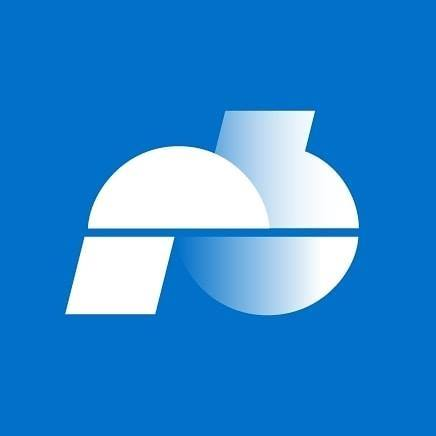

Bremen Zwei NEU
Germany
97fm Rádio Clube de Pombal
Portugal
100 Suoni Natura e Relax
Italy
100 Best Ibiza Deep House
Canada
ICE RADIO
The Netherlands

Qmusic
The Netherlands
The Oasis
Modern Easy Listening
The Oasis - Modern Easy Listening
The United States Of America
Rete Toscana Classica
Italy
 Polskie Radio Bialystok
Poland
Newstalk ZB Auckland
New Zealand